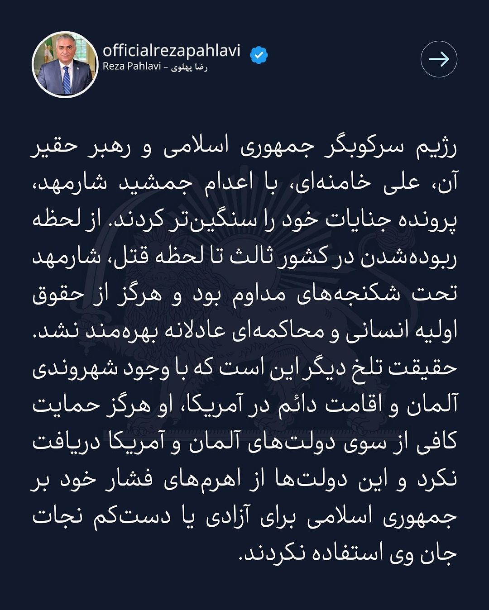

Déclarations du Prince Héritier Reza Pahlavi
Toutes les déclarations, entretiens et propos du prince héritier Reza Pahlavi, réunis en un seul endroit — du plus récent au plus ancien.
12 novembre 2025
La Garde immortelle d'Iran : vous n'êtes pas seuls
2 novembre 2025Élargir les petites cellules de résistance pour la bataille finale
1 novembre 2025Discours au congrès Cyrus le Grand à Toronto : la responsabilité d'être iranien
2 octobre 2025Lancement de la plateforme « Nous reprenons l'Iran » au Festival national de Mehregan
22 septembre 2025Au festival de Mehregan : unis de cœur et de voix, devenons le soleil dans la bataille contre les ténèbres
2 août 2025Discours à la Convention de coopération nationale pour sauver l'Iran
26 juillet 2025Convention de coopération nationale pour sauver l'Iran
1 juillet 2025Une Convention de coopération nationale pour sauver l'Iran sera organisée
22 juin 2025Le prince héritier Reza Pahlavi : le moment du soulèvement final contre le régime approche — soyez prêts
21 juin 2025Entretien spécial : le prince héritier Reza Pahlavi avec Manoto TV
17 juin 2025Message à la nation iranienne : la fin de la République islamique marque la fin de sa guerre de 46 ans contre le peuple iranien
14 juin 2025L'Iran vous appartient, et le récupérer est aussi entre vos mains
16 février 2025La rencontre de convergence de Munich
25 janvier 2025Entretien exclusif avec le prince héritier Reza Pahlavi sur la reconquête de l'identité de l'Iran
2 décembre 2024Conversation exclusive et intime de Shahin Najafi avec le prince héritier Reza Pahlavi
15 novembre 2024Entretien complet : le prince héritier Reza Pahlavi sur EWTN, le réseau catholique mondial
14 novembre 2024Une nouvelle opportunité de sauver et de reconquérir l'Iran
13 novembre 2024Entretien : le prince héritier Reza Pahlavi avec Newsmax — « La pression interne forcera l'effondrement du régime iranien »
13 novembre 2024Requête du prince héritier Reza Pahlavi au père du martyr Pouya Bakhtiari
6 novembre 2024Message de félicitations du prince héritier Reza Pahlavi à l'occasion de la présidence de Donald Trump
2 novembre 2024Déclaration sur l'opération de représailles israélienne au cœur du territoire iranien

29 octobre 2024